176 papers · 99 relevant · 6 highlighted
Every paper with at least one nonzero topic score, sorted by best-matching score. 🔥 marks scores ≥4/5. Click the title to jump to the full entry below; click [arXiv] to open the paper page. (secondary) marks papers from de-prioritized cond-mat archives.
Rydberg arrays 5/5 · 🔥 QC/QI experiment 4/5 · 🔥 analog quantum simulation 4/5 · 🔥 entanglement & information structure 4/5 · 🔥 non-equilibrium dynamics 4/5 · quantum measurements 3/5 · exotic spin models in light-matter 2/5 · measurement-induced transitions 2/5 · non-equilibrium universality 2/5 · scars & prethermalization 2/5scars & prethermalization 5/5 · 🔥 Rydberg arrays 4/5 · 🔥 non-equilibrium dynamics 4/5 · analog quantum simulation 3/5 · driven-dissipative phase transition 3/5 · entanglement & information structure 3/5 · exotic spin models in light-matter 3/5analog quantum simulation 4/5 · 🔥 driven-dissipative phase transition 4/5 · Tavis-Cummings & cavity-many-emitter 3/5 · correlated cavity matter 3/5 · exotic spin models in light-matter 3/5 · non-equilibrium dynamics 3/5 · non-equilibrium universality 3/5 · quantum optics experiment 3/5 · Keldysh / 2PI / non-Gaussian methods 2/5 · methods for driven-dissipative 2/5 · entanglement & information structure 1/5driven-dissipative phase transition 4/5 · 🔥 entanglement & information structure 4/5 · 🔥 measurement-induced transitions 4/5 · 🔥 non-equilibrium universality 4/5 · non-equilibrium dynamics 3/5 · methods for driven-dissipative 2/5 · quantum measurements 2/5(secondary) — 🔥 driven-dissipative phase transition 4/5 · 🔥 non-equilibrium dynamics 4/5 · 🔥 quantum optics experiment 4/5 · Keldysh / 2PI / non-Gaussian methods 3/5 · methods for driven-dissipative 3/5 · non-equilibrium universality 3/5quantum measurements 4/5 · correlated / nonlocal dissipation 3/5 · driven-dissipative phase transition 3/5 · entanglement & information structure 3/5 · methods for driven-dissipative 3/5 · measurement-induced transitions 2/5 · non-equilibrium dynamics 2/5driven-dissipative phase transition 4/5 · entanglement & information structure 3/5 · methods for driven-dissipative 3/5 · non-equilibrium dynamics 3/5 · Keldysh / 2PI / non-Gaussian methods 2/5 · correlated / nonlocal dissipation 2/5 · non-equilibrium universality 2/5QC/QI experiment 4/5 · 🔥 quantum optics experiment 4/5 · quantum measurements 3/5 · entanglement & information structure 2/5 · interference shaping light 2/5(secondary) — 🔥 QC/QI experiment 4/5 · 🔥 quantum optics experiment 4/5 · quantum measurements 3/5 · spintronics-quantum-optics interface 3/5driven-dissipative phase transition 4/5 · 🔥 non-equilibrium dynamics 4/5 · non-equilibrium universality 3/5 · quantum measurements 2/5non-equilibrium dynamics 4/5 · driven-dissipative phase transition 3/5 · entanglement & information structure 2/5 · non-equilibrium universality 2/5 · quantum measurements 2/5Rydberg arrays 4/5 · analog quantum simulation 3/5 · entanglement & information structure 3/5 · exotic spin models in light-matter 3/5QC/QI experiment 4/5 · 🔥 quantum optics experiment 4/5 · quantum measurements 3/5 · interference shaping light 2/5non-equilibrium dynamics 4/5 · driven-dissipative phase transition 3/5 · methods for driven-dissipative 3/5 · entanglement & information structure 2/5QC/QI experiment 4/5 · 🔥 quantum optics experiment 4/5 · quantum measurements 2/5 · spintronics-quantum-optics interface 2/5QC/QI experiment 4/5 · 🔥 spintronics-quantum-optics interface 4/5 · non-equilibrium dynamics 2/5 · quantum measurements 2/5QC/QI experiment 4/5 · 🔥 quantum optics experiment 4/5 · entanglement & information structure 2/5 · quantum measurements 2/5methods for driven-dissipative 4/5 · non-equilibrium dynamics 3/5 · driven-dissipative phase transition 2/5 · entanglement & information structure 2/5(secondary) — 🔥 spintronics-quantum-optics interface 4/5 · QC/QI experiment 3/5 · correlated / nonlocal dissipation 2/5 · quantum measurements 2/5QC/QI experiment 4/5 · non-equilibrium dynamics 2/5 · quantum measurements 2/5 · quantum optics experiment 2/5QC/QI experiment 4/5 · 🔥 quantum optics experiment 4/5 · interference shaping light 2/5QC/QI experiment 4/5 · spintronics-quantum-optics interface 3/5 · quantum optics experiment 2/5spintronics-quantum-optics interface 4/5 · interference shaping light 3/5 · methods for driven-dissipative 2/5spintronics-quantum-optics interface 4/5 · QC/QI experiment 3/5 · quantum measurements 2/5quantum measurements 4/5 · entanglement & information structure 2/5 · methods for driven-dissipative 2/5QC/QI experiment 4/5 · entanglement & information structure 2/5 · non-equilibrium dynamics 2/5entanglement & information structure 4/5 · 🔥 non-equilibrium dynamics 4/5QC/QI experiment 4/5 · 🔥 quantum optics experiment 4/5non-equilibrium dynamics 4/5 · analog quantum simulation 2/5 · exotic spin models in light-matter 2/5analog quantum simulation 4/5 · exotic spin models in light-matter 3/5QC/QI experiment 4/5 · quantum measurements 3/5quantum optics experiment 4/5 · QC/QI experiment 3/5QC/QI experiment 4/5 · quantum optics experiment 2/5quantum measurements 4/5 · entanglement & information structure 2/5methods for driven-dissipative 4/5 · non-equilibrium dynamics 2/5methods for driven-dissipative 4/5QC/QI experiment 4/5(secondary) — 🔥 spintronics-quantum-optics interface 4/5QC/QI experiment 4/5QC/QI experiment 4/5entanglement & information structure 3/5 · non-equilibrium dynamics 3/5 · Keldysh / 2PI / non-Gaussian methods 2/5 · correlated / nonlocal dissipation 2/5 · methods for driven-dissipative 2/5methods for driven-dissipative 3/5 · correlated / nonlocal dissipation 2/5 · driven-dissipative phase transition 2/5 · entanglement & information structure 2/5 · non-equilibrium dynamics 2/5methods for driven-dissipative 3/5 · Tavis-Cummings & cavity-many-emitter 2/5 · driven-dissipative phase transition 2/5 · non-equilibrium dynamics 2/5 · non-equilibrium universality 2/5methods for driven-dissipative 3/5 · non-equilibrium dynamics 3/5 · entanglement & information structure 2/5 · quantum measurements 2/5methods for driven-dissipative 3/5 · non-equilibrium dynamics 3/5 · correlated / nonlocal dissipation 2/5 · entanglement & information structure 2/5entanglement & information structure 3/5 · correlated / nonlocal dissipation 2/5 · non-equilibrium dynamics 2/5 · quantum measurements 2/5interference shaping light 3/5 · quantum optics experiment 3/5 · QC/QI experiment 2/5non-equilibrium dynamics 3/5 · non-equilibrium universality 3/5methods for driven-dissipative 3/5 · quantum measurements 3/5(secondary) — spintronics-quantum-optics interface 3/5 · QC/QI experiment 2/5QC/QI experiment 3/5 · methods for driven-dissipative 2/5(secondary) — non-equilibrium dynamics 3/5 · spintronics-quantum-optics interface 2/5quantum measurements 3/5 · Keldysh / 2PI / non-Gaussian methods 2/5entanglement & information structure 3/5 · Frenkel-Kontorova 2/5(secondary) — entanglement & information structure 3/5 · Keldysh / 2PI / non-Gaussian methods 2/5quantum measurements 3/5 · entanglement & information structure 2/5non-equilibrium dynamics 3/5 · non-equilibrium universality 2/5Rydberg arrays 3/5quantum measurements 3/5entanglement & information structure 3/5correlated / nonlocal dissipation 2/5 · quantum measurements 2/5 · spintronics-quantum-optics interface 2/5QC/QI experiment 2/5 · quantum optics experiment 2/5 · spintronics-quantum-optics interface 1/5analog quantum simulation 2/5 · interference shaping light 2/5analog quantum simulation 2/5 · non-equilibrium dynamics 2/5(secondary) — quantum optics experiment 2/5 · spintronics-quantum-optics interface 2/5(secondary) — driven-dissipative phase transition 2/5 · non-equilibrium dynamics 2/5(secondary) — Keldysh / 2PI / non-Gaussian methods 2/5 · non-equilibrium dynamics 2/5non-equilibrium dynamics 2/5 · non-equilibrium universality 2/5QC/QI experiment 2/5 · Rydberg arrays 1/5 · quantum measurements 1/5correlated / nonlocal dissipation 2/5 · entanglement & information structure 2/5QC/QI experiment 2/5 · quantum optics experiment 2/5non-equilibrium dynamics 2/5 · non-equilibrium universality 2/5analog quantum simulation 2/5 · methods for driven-dissipative 2/5quantum measurements 2/5methods for driven-dissipative 2/5QC/QI experiment 2/5entanglement & information structure 2/5(secondary) — non-equilibrium dynamics 2/5Keldysh / 2PI / non-Gaussian methods 2/5Keldysh / 2PI / non-Gaussian methods 2/5entanglement & information structure 2/5entanglement & information structure 2/5entanglement & information structure 2/5(secondary) — non-equilibrium dynamics 2/5methods for driven-dissipative 2/5QC/QI experiment 2/5entanglement & information structure 2/5spintronics-quantum-optics interface 2/5Keldysh / 2PI / non-Gaussian methods 2/5methods for driven-dissipative 2/5Keldysh / 2PI / non-Gaussian methods 2/5methods for driven-dissipative 2/5entanglement & information structure 2/5entanglement & information structure 2/5spintronics-quantum-optics interface 2/5(secondary) — non-equilibrium dynamics 2/5analog quantum simulation 2/5Kondo & dissipative impurity 1/5quantum measurements 1/5Papers by authors on your watch list. Click the title to jump to the full entry below; click [arXiv] to open the paper page.
Papers from quant-ph and your primary cond-mat archives (quant-gas, stat-mech, str-el, dis-nn). Highlighted papers (⭐) come first, then everything else sorted by topic-relevance score, highest first.
← Index · ← Previous · Next →
Authors: Kejun Liu
Type: theory · Category: other · PDF: https://arxiv.org/pdf/2604.25801v1
Analysis basis: full PDF text, analyzed in chunks
Topic relevance: methods for driven-dissipative 3/5 · Tavis-Cummings & cavity-many-emitter 2/5 · driven-dissipative phase transition 2/5 · non-equilibrium dynamics 2/5 · non-equilibrium universality 2/5
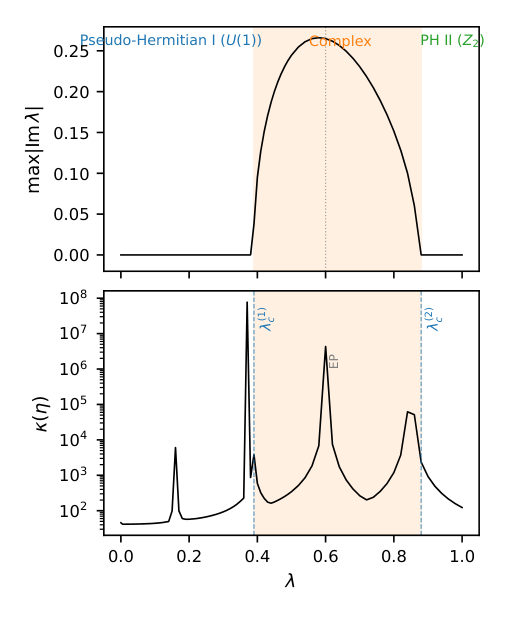
Main problem. The paper seeks to resolve the unexplained anomaly where the non-Hermitian Nakajima-Zwanzig projected Liouvillian (QLQ) in the Jaynes-Cummings model exhibits a purely real spectrum.
Main result. The authors prove that QLQ is pseudo-Hermitian in the Mostafazadeh sense, meaning a positive-definite metric exists that ensures a real spectrum. They also identify a re-entrant pseudo-Hermitian phase during the transition from the Jaynes-Cummings to the Rabi model.
Method. The study uses biorthonormal diagonalization of the QLQ matrix, construction of a symmetrizing metric from left eigenvectors, and a continuous lambda-deformation to scan parameter regimes.
Summary. This paper resolves why the non-Hermitian Nakajima-Zwanzig projected Liouvillian in the Jaynes-Cummings model has a real spectrum by demonstrating its pseudo-Hermiticity. By finding a positive-definite metric that intertwines the operator with its adjoint, the authors explain the spectral reality and explore how this property persists or breaks during the transition to the Rabi model. The study also identifies specific regimes of broken pseudo-Hermiticity and characterizes the nature of exceptional points in the thermodynamic limit. This provides a deep mathematical foundation for the analyticity of memory kernels in quantum optical models.
Model / system. The system is the Jaynes-Cummings model and its deformation into the full Rabi model, describing a single-mode cavity coupled to a two-level atom in an open quantum dynamics framework using the Nakajima-Zwanzig projection formalism.
Key observables. The spectrum of the projected Liouvillian (real vs. complex eigenvalues), the intertwining residual, the condition number of the metric, and the scaling of the critical exponent at exceptional points.
Important parameters / regimes. Coupling strength (g), detuning (omega_0/omega_c), deformation parameter (lambda) ranging from 0 to 1, bath temperature (beta), and Hilbert space truncation (N_max).
Assumptions / limitations. The analysis assumes a truncation of the Hilbert space (N_max) and considers vacuum or thermal baths.
Figures summary. The figures (implied by tables) present convergence data for the intertwining residual, verification of the metric across various JC scenarios, a scan of the lambda-deformation showing PH and complex regimes, and critical-exponent fits for eigenvalue coalescence.
Paper structure. The paper identifies the spectral anomaly, introduces the mathematical framework of pseudo-Hermiticity, presents numerical verification of the metric and its stability, analyzes the transition from JC to Rabi models, and discusses the scaling of exceptional points.
Why it may be interesting. This is highly relevant for researchers in open quantum systems and quantum optics as it provides a fundamental structural reason (pseudo-Hermiticity) for the stability of real spectra in non-Hermitian generators, which is crucial for understanding memory kernels and dissipation.
The Nakajima-Zwanzig projected Liouvillian QLQ, the generator of the exact memory kernel in open quantum dynamics, is manifestly non-Hermitian yet has been reported to possess a purely real spectrum in the Jaynes-Cummings model -- an anomaly unexplained since observation. We resolve this anomaly by showing that QLQ is pseudo-Hermitian in the Mostafazadeh sense: a positive-definite metric eta>0 exists such that (QLQ)^dag eta = eta (QLQ), forcing the spectrum to be real. The pseudo-Hermiticity is genuine: the Delta N = 0 and Delta N = +/-2 sectors are individually non-Hermitian (residuals 1.70 and 5.06, respectively), yet the global spectrum is protected by eta. The metric survives the bath-truncation limit (N_max = 3--20, matrix dimension up to 1764 x 1764) with intertwining residual <10^{-11}. A continuous deformation to the full Rabi model reveals a re-entrant pseudo-Hermitian phase with two exceptional-point boundaries, in which the metric condition number diverges. The result supplies a structural reason for Hardy-space analyticity of the memory kernel in the canonical quantum-optical model.
Authors: Yijia Cheng, Ruicheng Bao, Zhonghuai Hou
Type: both · Category: statistical mechanics · PDF: https://arxiv.org/pdf/2604.25749v1
Analysis basis: full PDF text, analyzed in chunks
Topic relevance: methods for driven-dissipative 3/5 · non-equilibrium dynamics 3/5 · entanglement & information structure 2/5 · quantum measurements 2/5
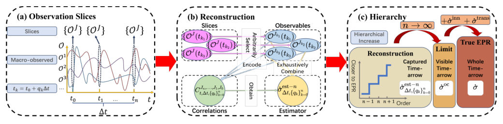
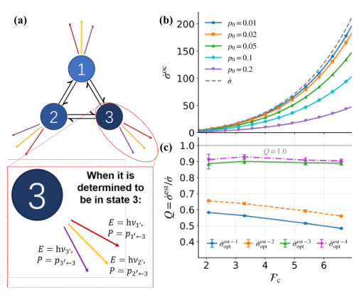
Main problem. How to reconstruct the true Entropy Production Rate (EPR) and quantify thermodynamic irreversibility from partially observed, coarse-grained, or noisy experimental data.
Main result. The authors establish a monotonic hierarchy of lower bounds on the EPR, where increasing the order of multi-time correlations systematically provides tighter bounds that converge to the true EPR under ideal conditions.
Method. A hierarchical reconstruction framework using multi-time correlation functions of state observables, optimized via a search over time intervals and observation thresholds, and analyzed using the data-processing inequality.
Summary. This paper presents a new method for estimating the entropy production rate (EPR) from experimental observations. By using higher-order multi-time correlations, the authors create a hierarchy of increasingly accurate lower bounds on the true thermodynamic irreversibility. They demonstrate that as more temporal information is included, the estimate converges toward the true EPR. The framework is particularly useful for systems with coarse-grained or noisy data, such as single-molecule fluorescence experiments.
Model / system. The framework is applied to Markovian jump processes and encompasses overdamped Langevin dynamics, with specific illustrative models involving three-state biomolecular processes and single-molecule Fluorescence Correlation Spectroscopy (FCS).
Key observables. Multi-time correlation functions, Entropy Production Rate (EPR), and composition-like macroscopic observables.
Important parameters / regimes. Number of observation slices (n), time interval (delta t), intermediate measurement times (qk), and the recoloring matrix (R) representing observation ambiguity.
Assumptions / limitations. Assumes non-equilibrium steady states (NESS), 'composition-like' observables with constant sums, and stationarity of the processes.
Figures summary. Figure 1 illustrates the transition from raw observables to multi-time correlations and the hierarchical tightening of bounds; Figure 2 shows the impact of observation ambiguity (recoloring) and the convergence of the hierarchy; Figure S1 shows the optimization landscape for parameters.
Paper structure. The paper introduces the problem of EPR estimation, defines the mathematical framework for multi-time correlation reconstruction, proves the hierarchical lower-bound property using the data-processing inequality, demonstrates optimization strategies for time intervals, and compares the method's performance against existing bounds like the pseudo-EPR.
Why it may be interesting. This work provides a systematic way to extract thermodynamic information from time-series data, which is highly relevant for characterizing dissipation and irreversibility in open quantum systems and driven many-body dynamics where full state knowledge is unavailable.
The entropy production rate (EPR), a key measure of thermodynamic irreversibility in stochastic thermodynamics, is difficult to determine directly in experiments, motivating lower-bound-based estimation from observations. However, a systematic framework for organizing increasing amounts of the irreversibility information in experimental state observables into progressively tighter bounds remains lacking. Here, we show that multi-time correlations of a class of state observations naturally encode this information to provide a hierarchy. By defining a reconstruction operation as a combination of correlations, we obtain a sequence of lower bounds on the EPR. Correlations of higher order capture the thermodynamic information at greater temporal depth, thereby capturing more irreversibility and yielding tighter bounds. Under ideal conditions, this hierarchy converges to the full EPR in the limit of infinitely dense observations over a finite time window.
Authors: Ken Funo, Tan Van Vu, Keiji Saito
Type: theory · Category: statistical mechanics · PDF: https://arxiv.org/pdf/2604.25245v1
Analysis basis: full PDF text, analyzed in chunks
Topic relevance: methods for driven-dissipative 3/5 · non-equilibrium dynamics 3/5 · correlated / nonlocal dissipation 2/5 · entanglement & information structure 2/5
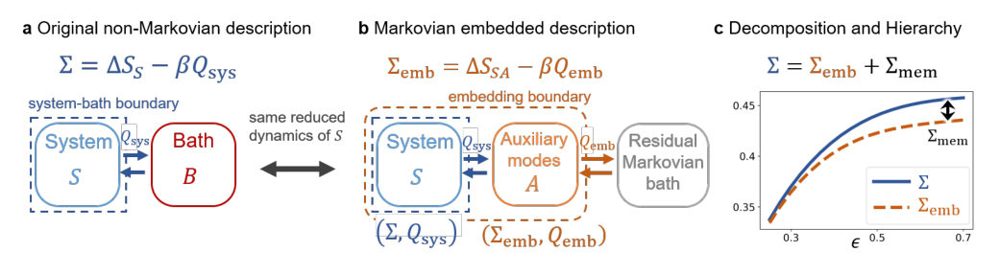
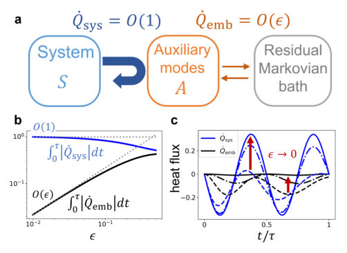
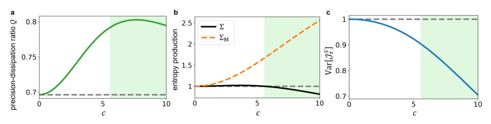
Main problem. The paper investigates how non-Markovian memory effects modify fundamental thermodynamic trade-off relations, such as the Thermodynamic Uncertainty Relation (TUR), speed limits, and power-efficiency trade-offs.
Main result. The authors establish a hierarchy of entropy production where the true non-Markovian entropy production upper bounds that of its Markovian embedding, and use this to derive non-Markovian extensions of key thermodynamic bounds.
Method. The study employs a Markovian embedding technique to represent non-Markovian dynamics as an enlarged Markovian system, using relative entropy and the Cauchy-Schwarz inequality to decompose and bound entropy production.
Summary. This paper establishes a fundamental hierarchy of entropy production for non-Markovian systems by using a Markovian embedding technique. It proves that the entropy production of a non-Markovian system is always greater than or equal to its embedded Markovian counterpart. Using this hierarchy, the authors derive new versions of the Thermodynamic Uncertainty Relation, thermodynamic speed limits, and power-efficiency trade-offs. The results show that memory effects can be exploited to enhance the precision of currents relative to dissipation. The findings apply to both classical Langevin dynamics and quantum master equations.
Model / system. The model consists of non-Markovian open systems described by generalized Langevin dynamics (Zwanzig model) coupled to structured Gaussian baths, including both underdamped and overdamped regimes and extensions to the quantum regime via the GKSL master equation.
Key observables. Entropy production, heat current, power, efficiency, Thermodynamic Uncertainty Relation (TUR) precision, and thermodynamic speed limits.
Important parameters / regimes. Memory kernel, spectral density (Drude-Lorentz, super-Ohmic), temperature, coupling strength, and the underdamped/overdamped regimes.
Assumptions / limitations. The derivation assumes specific initial conditions, such as the system and bath being in a conditional thermal state or a product state with vanishing initial interaction.
Figures summary. Figure 1 illustrates the entropy production hierarchy and decomposition into embedded and memory-induced parts; Figure 2 shows memory-assisted heat exchange with suppressed dissipation; Figure 3 demonstrates the application of the current definition in a harmonic potential.
Paper structure. The paper introduces the problem of memory-induced irreversibility, develops the Markovian embedding framework, establishes the entropy production hierarchy, derives various non-Markovian thermodynamic trade-off relations, and discusses extensions to the quantum regime and specific bath models.
Why it may be interesting. This paper is highly relevant for researchers in open quantum systems as it provides a quantitative framework to treat bath memory as a thermodynamic resource and establishes new bounds for precision and efficiency in non-Markovian environments.
Non-Markovian dynamics arise when a system is coupled to a bath with finite correlation time, giving rise to memory effects that allow the bath to temporarily store and return excitations. However, how memory modifies irreversibility and whether it can be exploited to improve thermodynamic performance is not well established. We address this question by employing a Markovian embedding of generalized Langevin dynamics, in which bath memory is encoded in auxiliary modes and irreversible dissipation in a residual Markovian bath. Here we show that the entropy production defined for the original non-Markovian system upper bounds that of the embedded system, thereby establishing a hierarchy of entropy production under Markovian embedding. Leveraging this hierarchy, we derive non-Markovian extensions of the thermodynamic uncertainty relation, speed limit, and power-efficiency trade-off. For underdamed generalized Langevin systems, sufficiently structured baths allow finite heat currents at vanishingly small entropy production, whereas Carnot efficiency at finite power remains unattainable for ordinary spectral densities. In the overdamped regime, memory effects can simultaneously reduce entropy production and current fluctuations, thereby enhancing the precision-to-dissipation ratio. We further discuss the extension of the hierarchy to generic bath models and the quantum regime. These results provide a quantitative framework for exploiting memory as a thermodynamic resource and for designing energy-efficient protocols in structured environments.
Authors: Adam Z. Kaczmarek, Johann Gil, Zygmunt Bąk, Ewa A. Drzazga-Szczȩśniak, Dominik Szczȩśniak
Type: theory · Category: quantum information and computing · PDF: https://arxiv.org/pdf/2604.24976v1
Analysis basis: full PDF text, analyzed in chunks
Topic relevance: entanglement & information structure 3/5 · correlated / nonlocal dissipation 2/5 · non-equilibrium dynamics 2/5 · quantum measurements 2/5
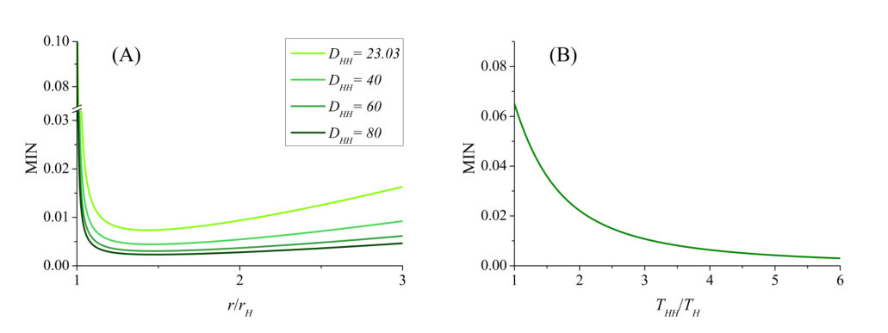
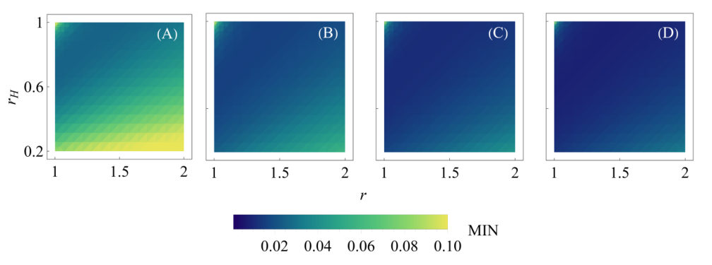
Main problem. Investigating how the 'quantum atmosphere' (the spatially extended thermal region surrounding a black hole) influences nonlocal quantum correlations in bosonic fields.
Main result. Bosonic nonlocal correlations exhibit a pronounced degradation at a finite radial distance from the event horizon and eventually vanish, showing a more sensitive response to radiation compared to fermionic systems.
Method. The study uses Measurement-Induced Nonlocality (MIN) as a quantifier, employing a single-mode approximation and Bogoliubov-style transformations within the Kruskal basis to analyze the Hartle-Hawking vacuum.
Summary. This paper examines how the thermal environment of a black hole's 'quantum atmosphere' affects nonlocal correlations in bosonic fields. Unlike fermionic fields, which show a gradual degradation due to the Pauli exclusion principle, bosonic fields exhibit a much more rapid loss of nonlocality at a specific radial distance. The researchers found that as the thermal effects increase, the region where quantum correlations can be effectively utilized shrinks. This suggests that while bosonic systems are highly sensitive probes of black hole radiation, they are also more easily decohered by the surrounding environment.
Model / system. A bipartite system of two observers (Alice and Bob) sharing a maximally entangled Bell state of a massless bosonic scalar field in a Schwarzschild black hole spacetime, specifically within the Hartle-Hawking vacuum.
Key observables. Measurement-Induced Nonlocality (MIN)
Important parameters / regimes. Scaled radial distance (r/rH), scaled Hartle-Hawking temperature (THH/TH), and the Hartle-Hawking constant (DHH).
Assumptions / limitations. The study assumes a massless scalar field, a Schwarzschild black hole geometry, and utilizes a single-mode approximation for the bosonic bipartite states.
Figures summary. Figure 1 shows MIN as a function of normalized radius and scaled temperature; Figure 2 displays the MIN on a plane of distance (r) and horizon size (rH) for various DHH values, illustrating the shrinkage of the correlation region.
Paper structure. The paper introduces the concept of the quantum atmosphere, defines the bosonic field model in Schwarzschild spacetime, applies the MIN quantifier to evaluate correlations, compares bosonic results to previous fermionic studies, and concludes with the implications for using bosonic probes.
Why it may be interesting. It explores how curved spacetime and thermal environments (open quantum system dynamics) affect entanglement and nonlocality, specifically highlighting how different quantum statistics (Bose vs. Fermi) lead to different degradation patterns in quantum correlations.
Recent theoretical studies propose that Hawking radiation may not emerge strictly at the event horizon but rather from the spatially extended region surrounding a black hole, commonly referred to as the quantum atmosphere. In this work, we explore how this concept influences nonlocal quantum correlations in a bosonic bipartite system located at certain distance from a Schwarzschild black hole. By employing the measurement-induced nonlocality (MIN), as a quantifier of quantum correlations, we analyze the response of bosonic fields to the thermal and geometric characteristics associated with the Hartle-Hawking vacuum. In this manner, we extend previous studies that primarily focused on the fermionic systems. Our results reveal that, when quantum atmosphere is taken into account, the behavior of MIN departs from its conventional near-horizon profile. In particular, bosonic nonlocal correlations are found to exhibit a pronounced degradation at a finite radial distance from the event horizon and to ultimately vanish as scaled distance increases further. To some extent this behavior contrasts with the previously considered fermionic case, indicating that bosonic fields provide potentially stronger response to the quantum atmosphere.
Authors: Suman Karan, Aman Srivastava, Pratham Sachin Todkar, Anand K. Jha
Type: both · Category: quantum information and computing · PDF: https://arxiv.org/pdf/2604.25475v1
Analysis basis: full PDF text, analyzed in chunks
Topic relevance: interference shaping light 3/5 · quantum optics experiment 3/5 · QC/QI experiment 2/5
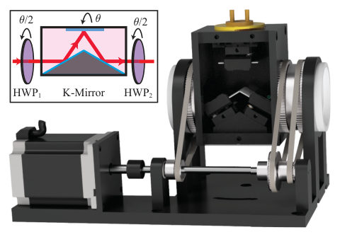
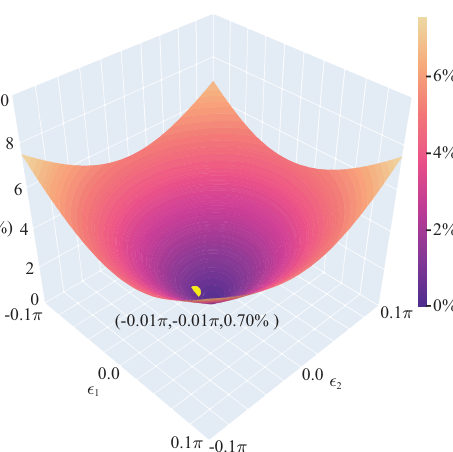
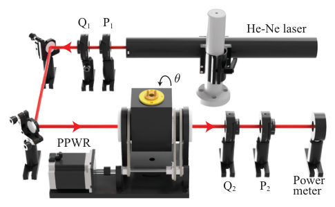
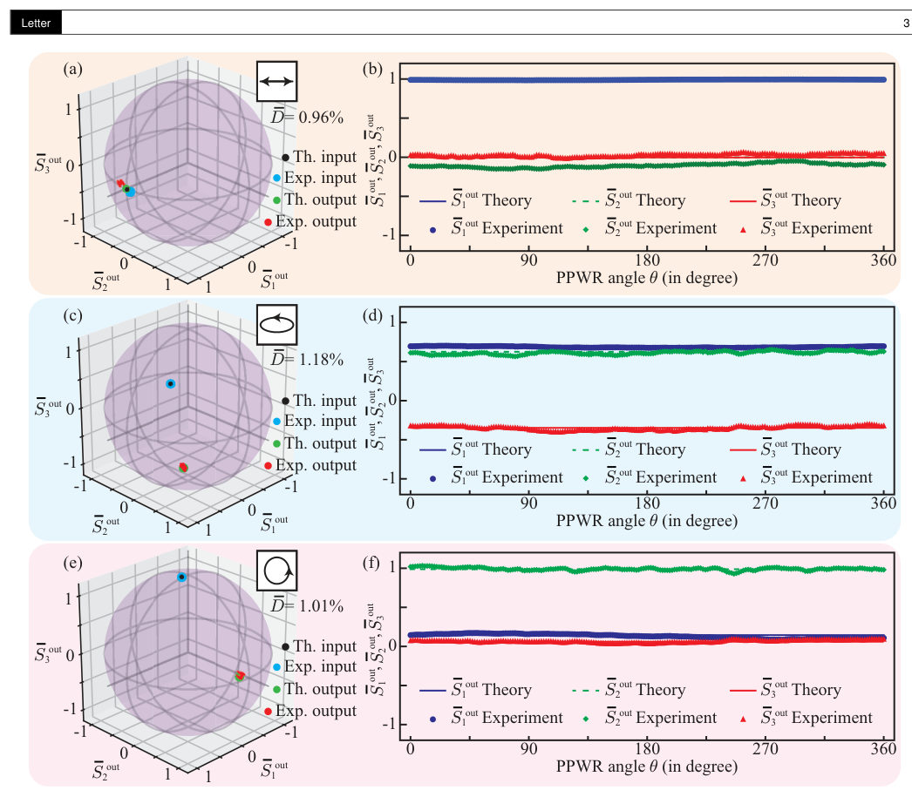
Main problem. Standard wavefront rotators like K-mirrors introduce rotation-dependent polarization changes, which limits their use in applications like astronomical derotation and OAM spectrum characterization in quantum optics.
Main result. The authors demonstrate that placing half-wave plates before and after a K-mirror and rotating them at half the K-mirror's rotation angle makes the transmitted polarization state independent of the rotation angle.
Method. The study uses Jones matrix analysis for theoretical proof and an experimental setup with a He-Ne laser, polarizers, and a K-mirror to validate the approach.
Summary. This paper presents a new method for creating a polarization-preserving wavefront rotator. By placing half-wave plates before and after a K-mirror and rotating them at half the rotation angle of the mirror, the polarization change becomes independent of the rotation angle. This approach is universal and works for any wavefront rotator. Experimental results show a very low polarization error of approximately 1%, making it highly effective for precision applications in astronomy and quantum information science.
Model / system. The physical system is a Polarization-Preserving Wavefront Rotator (PPWR) consisting of a K-mirror sandwiched between two half-wave plates (HWPs) mounted on a common rotation stage.
Key observables. Stokes parameters (S0, S1, S2, S3), Poincaré sphere geodesic distance (mean polarization error), and retardance error.
Important parameters / regimes. K-mirror base angle (30 degrees), HWP rotation angle (half the K-mirror angle), and HWP retardance error (epsilon).
Assumptions / limitations. The theoretical ideal assumes perfect half-wave plates (zero retardance error), while the experimental error is limited by the retardance imperfection of commercial HWPs.
Figures summary. Fig 1 shows a 3D model of the PPWR device; Fig 2 plots simulated polarization error vs. HWP retardance error; Fig 3 shows the experimental setup for Stokes parameter measurement; Fig 4 shows Poincaré sphere representations of measured states and normalized Stokes parameters.
Paper structure. The paper introduces the problem of polarization change in K-mirrors, presents a theoretical solution using a HWP sandwich, provides a mathematical proof via Jones matrices, describes the experimental implementation and setup, and concludes with error analysis and experimental validation.
Why it may be interesting. This is highly relevant for quantum optics and photonic quantum technology, as it provides a universal method to rotate wavefronts (e.g., for OAM manipulation) without disturbing the polarization state of qubits or optical modes.
A K-mirror rotates the wavefront of an incident optical field. However, the rotation always introduces polarization changes in the transmitted field. This is a serious concern for applications ranging from astronomical image derotation to orbital angular momentum spectrum characterization in photonic quantum technology. Recent efforts have shown that the polarization change can be minimized significantly, but these require either a very small base angle that limits the field of view, or mirrors with a customized refractive index. Making the transmitted polarization state completely independent of the rotation angle has remained an open problem. In this work, we show that placing half-wave plates before and after a K-mirror and rotating them synchronously at half the K-mirror rotation angle makes the polarization change in the transmitted field exactly independent of the rotation angle. This works for any wavefront rotator, any base angle, any mirror refractive index, and any input state of polarization. We experimentally demonstrate the approach using a K-mirror with a base angle of $30^{\circ}$, which gives the largest field of view among practical designs, and find a mean polarization error of ~1%, limited only by the retardance imperfection of commercially available half-wave plates. This has significant practical implications for applications that require precise wavefront rotation without polarization change.
Authors: Andrea Pelissetto, Davide Rossini, Ettore Vicari
Type: theory · Category: statistical mechanics · PDF: https://arxiv.org/pdf/2604.25351v1
Analysis basis: full PDF text, analyzed in chunks
Topic relevance: non-equilibrium dynamics 3/5 · non-equilibrium universality 3/5
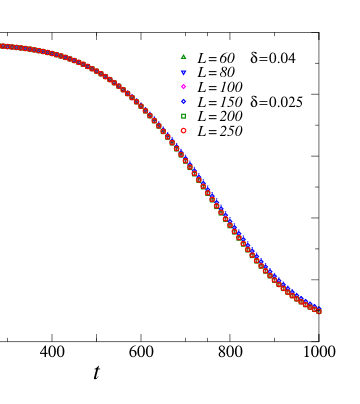
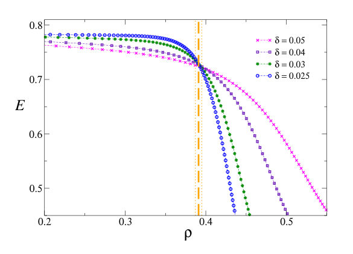
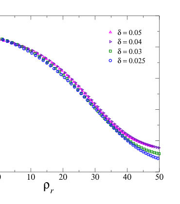
Main problem. Investigating the out-of-equilibrium spinodal-like scaling behavior in 3D systems following a temperature quench across a first-order phase transition.
Main result. The study confirms that post-quench dynamics are driven by droplet nucleation, leading to a predicted scaling variable rho = (ln t)^(3/2 * delta) and a spinodal-like discontinuity in the energy density scaling function.
Method. Monte Carlo simulations using a heat-bath algorithm with a checkerboard update scheme on a 3D q=6 Potts model.
Summary. This paper investigates how a system behaves when suddenly cooled across a first-order phase transition in three dimensions. By studying the 3D q=6 Potts model, the authors show that the energy density follows a specific scaling law related to the time it takes for droplets to nucleate. Their results support a 'spinodal-like' scenario where the phase change is driven by the growth and merging of these droplets. This provides a clearer understanding of non-equilibrium dynamics in systems undergoing discontinuous phase transitions.
Model / system. A three-dimensional q-state Potts model (specifically q=6) with a Hamiltonian representing short-range interactions, undergoing a thermal first-order phase transition.
Key observables. Rescaled energy density E(t) and the scaling variable rho = (ln t)^(3/2 * delta).
Important parameters / regimes. The distance from the transition point delta = (beta/beta_fo) - 1, the scaling exponent kappa = 3/2, and the thermodynamic limit.
Assumptions / limitations. The primary assumption is that the nucleation of smooth droplets is the dominant and slowest mechanism driving the post-quance phase change.
Figures summary. Figure 1 shows energy density convergence to the thermodynamic limit; Figure 2 demonstrates a stable crossing point for the scaling variable rho; Figure 3 shows data collapse onto a single curve using a rescaled variable rho_r.
Paper structure. The paper introduces the problem of post-quench dynamics, presents a scaling argument based on droplet nucleation, details the Monte Carlo numerical methodology, provides results for the 3D q=6 model, and concludes with the verification of the spinodal-like scenario.
We study the out-of-equilibrium spinodal-like behavior of three-dimensional (3D) $q$-state Potts models (for $q\ge 3$), observed when the temperature is quenched across the first-order transition (FOT) point $β_{\rm fo}=T_{\rm fo}^{-1}$. We consider a standard quench protocol, in which high-temperature configurations, thermalized at $β_i<β_{\rm fo}$, are driven across the FOT by a purely relaxational dynamics at $β>β_{\rm fo}$. We focus on the emergence of spinodal-like behaviors in the thermodynamic limit, associated with the dynamic phase change. We argue that, if the nucleation of smooth droplets is the relevant mechanism of the post-quench phase change, for sufficiently small $β_{\rm fo}-β_i>0$, the time-dependent energy density should scale in terms of $ρ= (\ln t)^{3/2} δ$, where $δ= β/β_{\rm fo}-1$, with a discontinuity at a particular value $ρ=ρ_s>0$. This implies the emergence of a spinodal-like behavior, whose time scale $τ$ increases exponentially as $\ln τ\approx (ρ_s/δ)^{2/3}$ in the limit $δ\to 0^+$. We present a numerical analysis of the quench protocol in the 3D $q=6$ Potts model, which supports the above spinodal-like scenario.
Authors: Yuan-De Jin, Zheng-Fei Ye, Wen-Long Ma
Type: theory · Category: quantum information and computing · PDF: https://arxiv.org/pdf/2604.25705v1
Analysis basis: full PDF text, analyzed in chunks
Topic relevance: methods for driven-dissipative 3/5 · quantum measurements 3/5
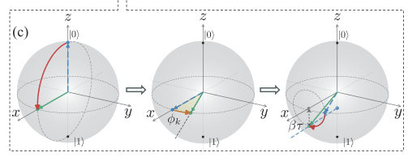
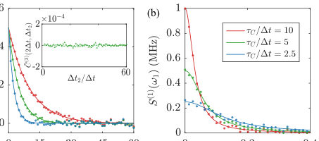
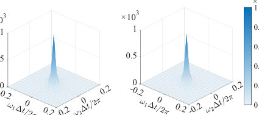
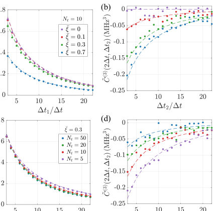
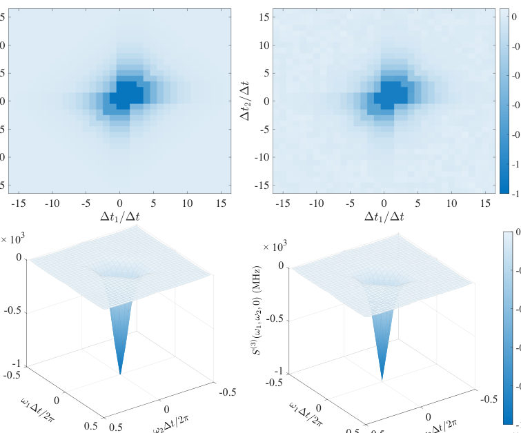
Main problem. The need for a universal and efficient method to fully characterize classical stochastic noise processes (both Gaussian and non-Gaussian) that cause qubit dephasing without requiring complex dynamical decoupling pulse sequences.
Main result. The authors propose a protocol using repetitive Ramsey interferometry measurements (RIMs) that can directly sample the noise field and reconstruct arbitrary-order correlation functions, including bispectra and trispectra.
Method. A protocol of sequential Ramsey Interferometry Measurements (RIMs) where the phase difference between pulses is tuned to achieve either linear or quadratic response, allowing for the estimation of n-point noise correlations.
Summary. The paper introduces a new method for characterizing qubit dephasing noise using repetitive Ramsey measurements. Unlike traditional spectroscopy, this method does not require complex dynamical decoupling sequences and can directly detect higher-order correlations like the bispectrum and trispectrum. It is shown to be effective for both Gaussian and non-Gaussian noise models and is robust against measurement errors and qubit decoherence. This offers a universal approach for noise spectroscopy across various quantum platforms.
Model / system. A single probe qubit subject to pure dephasing caused by a classical stochastic noise process beta(t). Specific noise models tested include the Gaussian Ornstein-Uhlenbeck process and an ensemble of non-Gaussian Two-Level Fluctuators (TLFs).
Key observables. n-point correlation functions of measurement outcomes, n-point noise cumulants, noise power spectrum, bispectrum, and trispectrum.
Important parameters / regimes. Short evolution regime (beta*tau << 1), phase difference (delta_phi), evolution time (tau), and delay time between cycles (delta_t).
Assumptions / limitations. The noise is classical and stochastic with zero mean; the system operates in the short-evolution regime where the noise is approximately constant during the Ramsey time.
Figures summary. Figure 1 shows the reconstruction of 4-point cumulants and trispectra; Figure 2 demonstrates the reconstruction of the 2-point correlation and spectrum for an OU process; Figure 3 shows 3-point cumulant and bispectrum reconstruction for TLFs; Figure 4 shows the transition from non-Gaussian to Gaussian noise.
Paper structure. Introduction of the noise characterization problem, description of the RIM protocol and mathematical framework for n-point correlations, derivation of the direct sampling condition and handling of repeated time indices, numerical validation using Gaussian (OU) and non-Gaussian (TLF) models, and an analysis of robustness against measurement errors.
Why it may be interesting. This paper provides a powerful tool for open quantum systems researchers to characterize complex, non-Gaussian environments using simple measurement sequences, bypassing the need for complex pulse engineering.
We propose a general method to fully characterize a classical stochastic noise process causing qubit dephasing through repetitive Ramsey interferometry measurements (RIMs) on the qubit. Compared to filter-function-based spectroscopy, our method does not require complicated dynamical decoupling pulses and can directly detect arbitrary-order correlation functions of such noise processes. We show that each RIM with a short evolution time and suitably chosen control pulses can perform a direct sampling of the noise field and the $n$-point correlations of the RIM outcomes are proportional to the $n$-point correlation functions of the noise processes. Then we numerically demonstrate this method for characterizing two typical examples of classical noises, including the Ornstein-Uhlenbeck processes producing Gaussian noises and an ensemble of TLFs producing non-Gaussian noises. Our method is independent of qubit lifetime and robust against qubit decoherence and measurement errors, thus offering a universal and efficient protocol for qubit noise spectroscopy across diverse platforms.
Authors: Arielle Sanford, Andrew T. Kamen, Frederic T. Chong, Andy J. Goldschmidt
Type: both · Category: quantum information and computing · PDF: https://arxiv.org/pdf/2604.24912v1
Analysis basis: full PDF text, analyzed in chunks
Topic relevance: QC/QI experiment 3/5 · methods for driven-dissipative 2/5
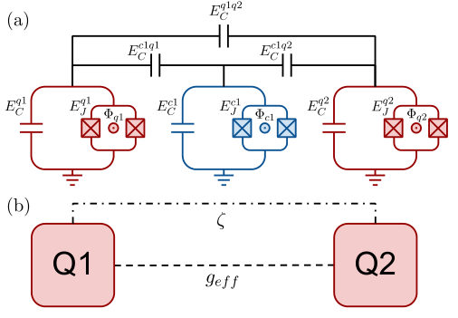
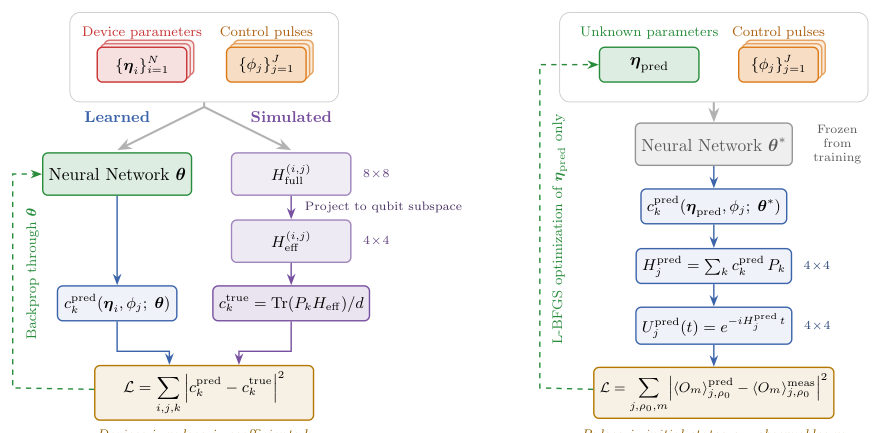
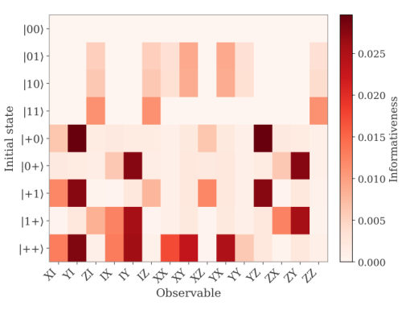
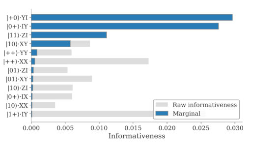
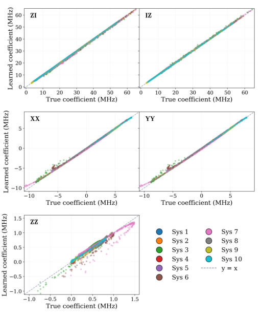
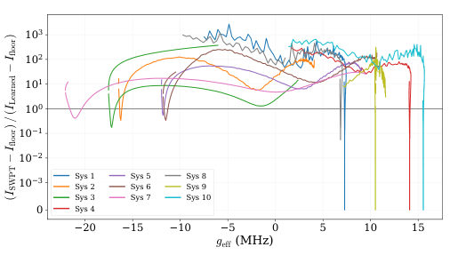
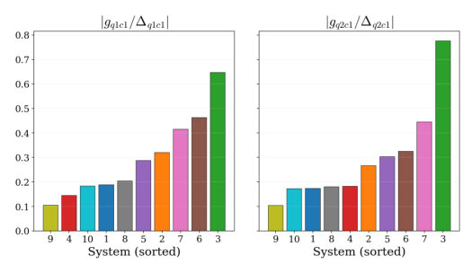
Main problem. Accurately mapping the complex multi-mode dynamics of superconducting processors (including couplers and resonators) to an effective qubit-level Hamiltonian, especially in regimes where traditional Schrieffer-Wolff perturbation theory fails.
Main result. The HAML framework achieves a 6x improvement in absolute error and an 8x improvement in relative error compared to Schrieffer-Wolff theory, effectively capturing parasitic ZZ interactions and maintaining accuracy in strong-hybridization regimes.
Method. A two-phase meta-learning framework (HAML) consisting of an offline supervised training phase on simulated devices and an online adaptation phase using a small number of hardware measurements and L-BFGS optimization.
Summary. The paper presents HAML, a meta-learning framework designed to rapidly adapt effective Hamiltonian models for superconducting qubits. By training on simulated data and adapting to real hardware with minimal measurements, the method bypasses the need for complex analytical perturbation theory. It excels in regimes where traditional methods break down, such as strong hybridization and parasitic ZZ interactions. This approach offers a scalable solution for the calibration and control of near-term quantum processors.
Model / system. A transmon-coupler-transmon architecture consisting of two frequency-tunable qubits capacitively coupled to a tunable coupler, modeled by an 8-level multi-mode Hamiltonian under the rotating wave approximation.
Key observables. Effective Pauli coefficients (ZI, IZ, XX, YY, ZZ) and expectation values of single- and two-qubit Pauli operators.
Important parameters / regimes. Qubit and coupler frequencies, Josephson and charging energies, capacitive coupling energies, and SQUID fluxes; specifically focuses on the transition from dispersive to strong-hybridization regimes.
Assumptions / limitations. The framework assumes that the dynamics can be effectively captured by a reduced qubit subspace and relies on the availability of simulated data for the initial training phase.
Figures summary. Figure 1 shows the device architecture and effective model; Figure 2 illustrates the HAML training and adaptation pipeline; Figure 3 and 4 demonstrate measurement selection strategies; Figure 5 shows prediction accuracy on held-out devices; Figure 6 and 7 show performance in the strong-hybridization regime and error reduction compared to SWPT.
Paper structure. The paper introduces the problem of Hamiltonian reduction, presents the HAML meta-learning architecture (training and adaptation phases), details the measurement selection strategy, compares performance against Schrieffer-Wolff theory, and evaluates scalability and error characteristics.
Why it may be interesting. This is highly relevant for researchers in open quantum systems and quantum optics as it provides a data-driven way to handle complex, multi-mode dynamics and strong coupling without relying on the validity of perturbative expansions.
We introduce HAML (Hamiltonian Adaptation via Meta-Learning), a framework for fast online adaptation of effective Hamiltonian models of superconducting quantum processors. HAML proceeds in two phases. A supervised training phase uses an ensemble of simulated devices to learn an offline map from control inputs and device parameters to effective Hamiltonian coefficients. An online adaptation phase then uses a small number of hardware-accessible measurements to identify the unknown parameters of a new device. By training directly against effective two-qubit coefficients extracted from full multi-mode simulations, HAML implicitly learns the reduction from full multi-mode Hamiltonians to effective qubit descriptions without invoking perturbation theory. We further show that a variance-maximizing greedy selection of measurement configurations boosts online adaptation efficiency. We demonstrate HAML on a transmon-coupler-transmon system, recovering effective two-qubit coefficients across a wide range of operating regimes, including parameter regions where Schrieffer-Wolff perturbation theory (SWPT) breaks down. This establishes a scalable, sample-efficient approach to Hamiltonian reduction and characterization for near-term quantum processors, with direct implications for calibration, control, and error mitigation.
Authors: Jaromír Fiurášek
Type: theory · Category: quantum information and computing · PDF: https://arxiv.org/pdf/2604.25910v1
Analysis basis: full PDF text, analyzed in chunks
Topic relevance: quantum measurements 3/5 · Keldysh / 2PI / non-Gaussian methods 2/5
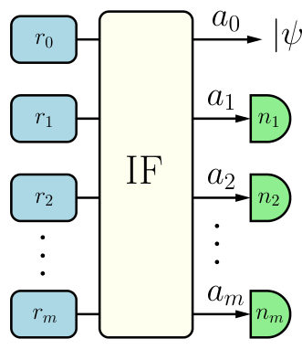
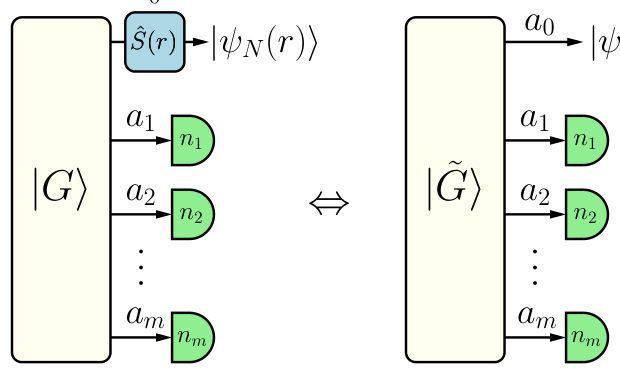
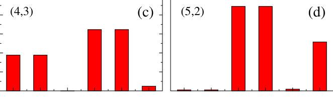
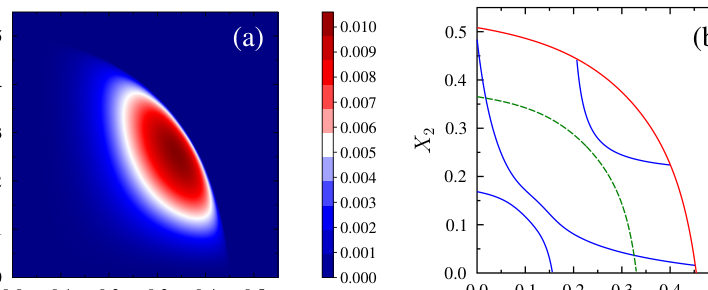
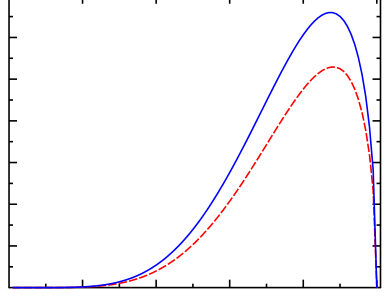
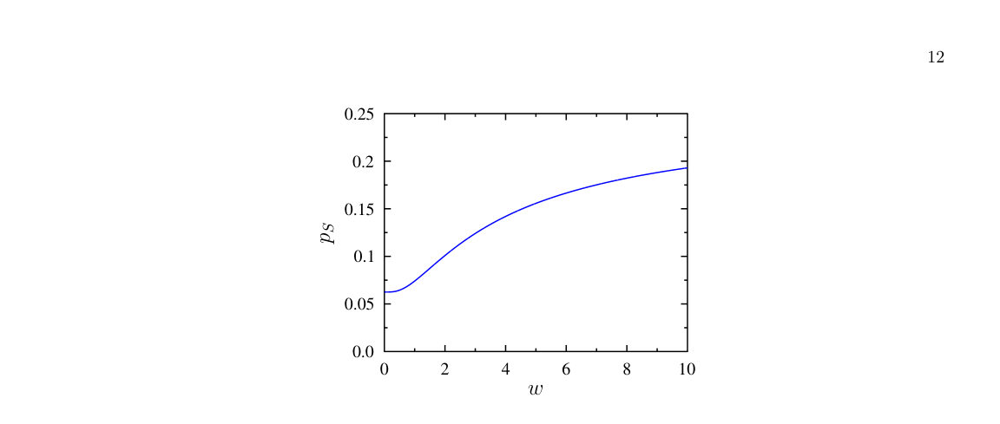
Main problem. Optimizing the heralding probability for the conditional preparation of non-classical (non-Gaussian) states of light using photon-counting measurements on multimode Gaussian states.
Main result. The authors demonstrate that maximizing the heralting probability can be formulated as solving a system of polynomial equations, providing an efficient way to find optimal configurations and incorporate squeezing constraints.
Method. The optimization is framed using the stellar (Bargmann) representation and solved via algebraic techniques such as Gröbner basis construction and homotopy continuation.
Summary. This paper presents a new method for maximizing the success rate (heralding probability) of generating non-classical light. By transforming the optimization problem into a system of polynomial equations, the authors enable efficient calculation of optimal squeezing and detection parameters. The approach is versatile enough to handle constraints on available squeezing and can be applied to various target states, including Fock state superpositions and single-rail qubits. This is crucial for improving the efficiency of optical quantum information processing.
Model / system. The system consists of multimode squeezed Gaussian states where non-Gaussian states (like Fock state superpositions or GKP states) are generated via photon-number measurements on a subset of modes.
Key observables. Heralding probability (p_S), photon number pattern, and photon number parity.
Important parameters / regimes. Squeezing parameters (r_j), photon number pattern (n_1, n_2, ...), and available single-mode quadrature squeezing limits.
Assumptions / limitations. Focuses on Gaussian states with vanishing coherent displacements and assumes the signal mode is directly coupled to all heralding modes.
Figures summary. Figure 1 shows the scheme for generating single-mode nonclassical states; Figure 2 illustrates the generation of squeezed superpositions of Fock states; Figure 3 plots maximum heralding probability for various target states; Figure 4 shows the dependence of p_S on damping parameters.
Paper structure. The paper introduces the problem of state preparation, develops a mathematical framework using polynomial equations, applies the method to various target states (single-mode and multi-mode), incorporates squeezing constraints, and provides specific numerical examples and applications to single-rail qubits.
Why it may be interesting. This is highly relevant for quantum optics and photonic quantum computing, as it provides a scalable mathematical tool to optimize the success rates of generating essential non-Gaussian resources like GKP and cat states.
Generation of highly non-classical quantum states of light is essential for optical quantum information processing and quantum metrology. Given the lack of sufficiently strong nonlinear interactions between optical fields, the commonly employed optical quantum-state preparation schemes are conditional, based on nonlinearity induced by heralding photon number measurement on a part of a multimode squeezed Gaussian state. Development and optimization of such probabilistic quantum-state engineering schemes represents one of the central challenges in current quantum optics. As technology advances and experiments progress to detection of higher numbers of photons, the maximization of the heralding probability becomes essential to ensure sufficiently high state-preparation rates. Here, we show that for the conditional quantum state preparation schemes based on Gaussian states and photon number measurements the maximization of the heralding probability can be formulated as finding solution to a system of polynomial equations, which offers an efficient way to find the optimal configuration and allows us to apply techniques dedicated specifically to solving such systems of equations. Our approach can seamlessly incorporate bounds on the available single-mode quadrature squeezing, which is highly experimentally relevant. We mainly consider generation of finite superpositions of Fock states but show that the approach can be straightforwardly extended to generation of squeezed superpositions of Fock states. We focus on Gaussian states with vanishing coherent displacements, hence the conditionally generated states have well defined photon number parity. We illustrate our general methodology on examples of generation of single-mode and two-mode states with two heralding modes.
Authors: Bowy M. La Riviere, Natalia Chepiga
Type: theory · Category: strongly correlated electrons · PDF: https://arxiv.org/pdf/2604.25493v1
Analysis basis: full PDF text, analyzed in chunks
Topic relevance: entanglement & information structure 3/5 · Frenkel-Kontorova 2/5
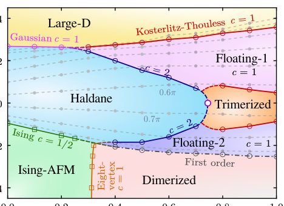
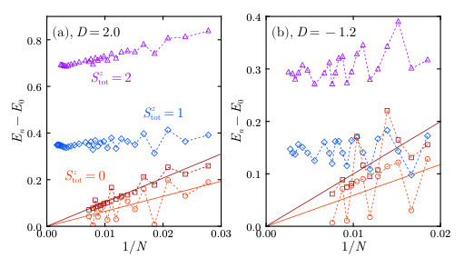
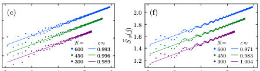
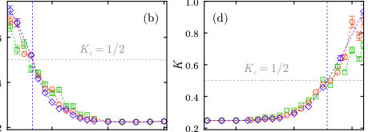
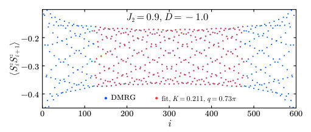
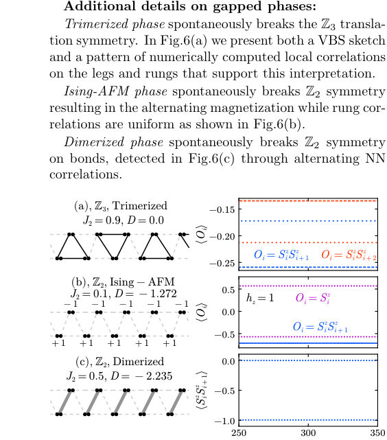
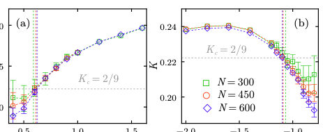
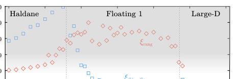
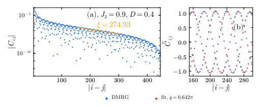
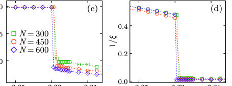
Main problem. The study investigates the effect of single-ion anisotropy on the quantum phase transitions out of the trimerized phase in frustrated Haldane chains, specifically addressing the nature of the transition between the Haldane and trimerized phases.
Main result. The authors discover a rich phase diagram containing five gapped phases and two new critical 'floating' phases that are non-magnetic. They also identify a composite critical line with central charge c=2 at the transition between the Haldane and floating phases.
Method. Large-scale Density Matrix Renormalization Group (DMRG) simulations using Matrix Product States (MPS) and finite-size scaling of entanglement entropy and correlation functions.
Summary. This paper explores the phase diagram of frustrated spin-1 chains subject to single-ion anisotropy. Using DMRG, the authors identify two previously unknown non-magnetic 'floating' phases that emerge from the trimerized background. They demonstrate that the transition from the topological Haldane phase to these floating phases is a composite transition with a central charge of c=2. The work provides a new perspective on the long-standing problem of the transition between Haldane and trimerized phases in 1D spin systems.
Model / system. A bilinear-biquadratic spin-1 J1-J2 frustrated Haldane chain (zig-zag ladder) with single-ion anisotropy D.
Key observables. Central charge (c), Luttinger liquid parameter (K), incommensurate wave-vector (q), entanglement entropy, local density of zeros, and spin-spin/dimer-dimer correlation functions.
Important parameters / regimes. Next-nearest-neighbor interaction (J2/J1), single-ion anisotropy (D/J1), and the bilinear-biquadratic angle (theta).
Assumptions / limitations. The study assumes the system can be accurately modeled by the 1D Hamiltonian and relies on the validity of the Calabrese-Cardy formula for extracting central charge from finite-size entanglement entropy.
Figures summary. Figures include sketches of various phases (Trimerized, Ising-AFM, Dimerized), fits of nearest-neighbor correlations to extract wave-vectors and Luttinger parameters, and the evolution of the Luttinger parameter across Kosterlitz-Thouless transitions.
Paper structure. The paper introduces the problem of the Haldane-trimerized transition, describes the Hamiltonian and numerical methods, presents the discovered phase diagram including the new floating phases, analyzes the criticality and central charge of the transitions, and concludes with implications for emergent symmetries.
Why it may be interesting. The discovery of non-magnetic floating phases and the identification of a composite c=2 critical line provides deep insight into the interplay between topological order and symmetry-breaking transitions, which is highly relevant to many-body dynamics and 1D quantum systems.
We investigate the effect of a single-ion anisotropy on the bilinear-biquadratic spin-1 J1-J2 chain, focusing on the quantum phase transitions out of the trimerized phase. Using large-scale density matrix renormalization group simulations, we uncover a rich phase diagram comprising five gapped phases and, remarkably, two critical floating phases. These incommensurate Luttinger liquid phases emerge from the proliferation of non-magnetic domains - 0-states and dimers - within a trimerized background and are confined to the zero magnetization sector, while magnetic excitations remain gapped. We show that the transition between the topological Haldane phase and the floating phases are governed by a composite critical line with central charge c=2, consistent with a coexistence of magnetic and non-magnetic critical modes. Our results shed new light on the long-standing problem of the Haldane-trimerized transition.
Authors: Andrew Maciejunes, Ross Gore, Sachin Shetty, Barry Ezell
Type: theory · Category: quantum information and computing · PDF: https://arxiv.org/pdf/2604.25708v1
Analysis basis: full PDF text, analyzed in chunks
Topic relevance: quantum measurements 3/5 · entanglement & information structure 2/5
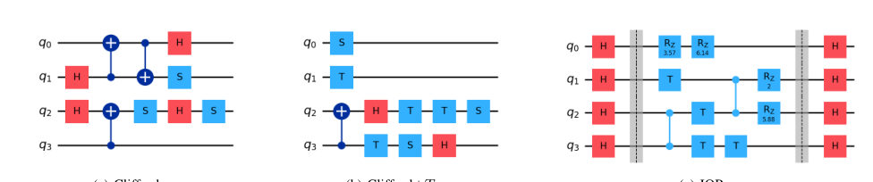
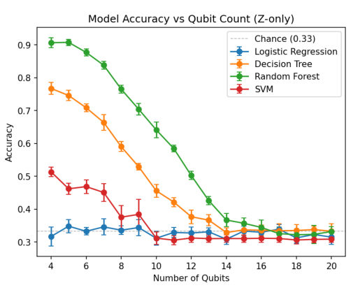
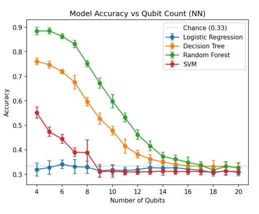
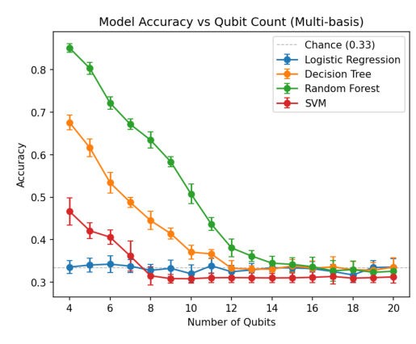
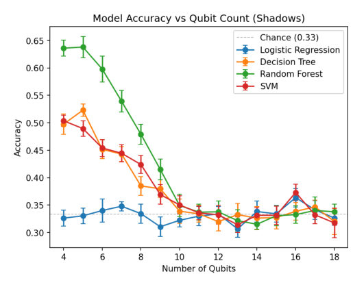
Main problem. Determining whether different polynomial-resource measurement strategies can effectively classify quantum circuit families (Clifford, Clifford+T, and IQP) as the number of qubits increases.
Main result. Z-basis-only measurements outperform multi-basis and classical shadows because the discriminative signal is concentrated in local ZZ correlations, though all strategies fail above approximately 12 qubits under a quadratic shot budget.
Method. The authors use a Random Forest classifier to compare four measurement strategies (Z-only, NN ZZ, multi-basis, and classical shadows) using noiseless Qiskit simulations.
Summary. This paper investigates how to distinguish between different types of quantum circuits using limited measurement resources. It finds that for circuits like IQP, measuring only in the Z-basis is more effective than more complex methods like classical shadows. However, it also reveals a fundamental scaling limit where a quadratic shot budget becomes insufficient to distinguish these families once the system exceeds about 12 qubits. The findings suggest that the key information for classification is stored in local, nearest-neighbor correlations.
Model / system. The study examines three families of random quantum circuits: Clifford, Clifford+T, and IQP (Instantaneous Quantum Polynomial), implemented on 4 to 20 qubits.
Key observables. Pauli correlators (specifically ZZ, XX, YY, XY, XZ, YZ), Hamming-weight, and single-qubit marginals.
Important parameters / regimes. Qubit count (n), shot budget (s = 16n^2), and the diagonal fraction of gates in the Z-basis.
Assumptions / limitations. The study assumes a polynomial-resource constraint and uses noiseless classical simulations, which may not account for real-device noise.
Figures summary. Figure 1 provides visual examples of the gate structures for Clifford, Clifford+T, and IQP circuit families.
Paper structure. The paper introduces the classification problem, defines the circuit families and measurement strategies, presents empirical results comparing accuracy across strategies, provides a theoretical framework for the optimality of Z-basis measurements, and discusses scaling limits and open questions.
We compare four polynomial-resource measurement strategies, (I) $Z$-basis-only, (II) nearest-neighbor $ZZ$ (NN), (III) multi-basis ($Z$, $X$, $Y$), and (IV) classical shadows, for classifying three quantum circuit families: IQP, Clifford, and Clifford$+T$. We find $Z$-only measurements outperform multi-basis and classical shadows across all qubit counts and all four classifiers evaluated, and the $O(\nqubits)$-feature NN strategy matches $Z$-only to within $0.02$ in Random Forest accuracy. The best result is a Random Forest accuracy of $0.91$ at 4--5 qubits under $Z$-only ($0.89$ for NN, $0.85$ for multi-basis, $0.67$ for shadows). All four strategies collapse to near-chance accuracy ($\approx 0.33$) above approximately 12 qubits under the quadratic shot budget $\shots = 16\nqubits^2$. These findings indicate that the discriminative signal between these circuit families is concentrated in local, nearest-neighbor $Z$-basis correlations, consistent with the diagonal gate structure of IQP circuits, and that additional Pauli correlator types or long-range correlations carry no compensating discriminative power for this task. We provide a formal theoretical framework showing that circuits with high diagonal fraction in a given basis concentrate their correlator structure in that basis, and that any deviation from the dominant basis incurs a provably higher estimator variance. These results establish that a quadratic shot budget is insufficient for reliable classification above approximately 12 qubits, but do not rule out the existence of a subquadratic or otherwise more efficient polynomial-resource strategy; whether any polynomial measurement protocol can classify these families at large qubit counts remains an open question.
Authors: Adrià Garcés, Ueli Töpfer, Lucio Isa, Demian Levis, Ignacio Pagonabarraga
Type: both · Category: statistical mechanics · PDF: https://arxiv.org/pdf/2604.25745v1
Analysis basis: full PDF text, analyzed in chunks
Topic relevance: non-equilibrium dynamics 3/5 · non-equilibrium universality 2/5
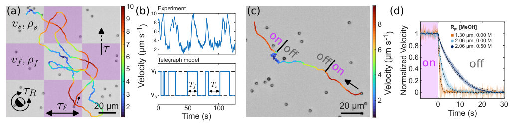
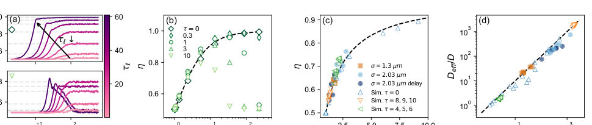
Main problem. Understanding how sensory delay (the finite time required for particles to adapt their velocity) affects the transport properties and localization of active colloids moving through heterogeneous motility landscapes.
Main result. The authors develop a theoretical framework that maps delayed dynamics onto a delay-free theory by using delay-renormalized effective Péclet numbers, showing that sensory delay can optimize both particle localization and effective diffusion.
Method. The study combines experimental microscopy of Janus colloids, numerical simulations, and an analytical approach using a telegraph process and moment expansion of the Fokker-Planck equation.
Summary. This paper investigates how the time delay in an active particle's ability to adapt its speed to its environment influences its movement. By studying Janus colloids in light-patterned landscapes, the authors show that this delay can be used to tune particle localization and diffusion. They provide a mathematical mapping that allows the complex delayed dynamics to be understood through a simpler, renormalized version of standard active matter theory. The findings reveal that both density patterns and transport properties follow universal scaling laws.
Model / system. The system consists of UV-responsive silica-titania Janus colloids in a checkerboard motility landscape where self-propulsion speed is spatially modulated. The dynamics are modeled using an Active Brownian Particle (ABP) framework with a Langevin equation featuring an exponential kernel for velocity adaptation.
Key observables. Mean square displacement (MSD), effective diffusion coefficient (Deff), stationary density/occupation fraction (eta), and Péclet numbers (Pe).
Important parameters / regimes. Sensory delay time (tau), rotational diffusion (Dr), domain size (l), switching rates (alpha, beta), and Péclet numbers (Pe).
Assumptions / limitations. The theory is valid in the slow-switching regime (delta << 1) and assumes rotational diffusion follows the Stokes-Einstein relation.
Figures summary. Figure 1 shows particle trajectories and the telegraph process model; Figure 2 demonstrates the evolution and scaling of the occupation fraction with delay; Figure S-series includes MSD curves, residence time distributions, and parameter summaries.
Paper structure. The paper introduces the problem of sensory delay in motility landscapes, describes the experimental setup and the telegraph process model, presents analytical derivations for transport coefficients, validates the theory with experimental and numerical data, and concludes with a discussion on the optimization of transport and scaling regimes.
Why it may be interesting. The study of delayed feedback and non-Markovian adaptation in active matter provides insights into the control of transport and the emergence of universal scaling in non-equilibrium systems, which is highly relevant to open quantum systems and driven many-body dynamics.
We experimentally, numerically and analytically explore the diffusive transport of active colloidal particles with sensory delay, navigating motility landscapes in which the self-propulsion speed depends on space. We show how the transport properties can be obtained by replacing the space dependence of the self-propulsion speed by a dynamical stochastic switching process in the absence of delay, and extend the theory for systems with finite delayed responses. We obtain analytical results for the mean square displacement and the effective diffusion coefficient which accurately predict experimental measurements and numerical simulations across multiple scales. We show how, within the regime of validity of the delay-extended theory, density patterns and effective diffusion obey universal scaling forms. Our work provides minimal framework describing the transport properties of active swimmers with internal adaptation dynamics in motility landscapes.
Authors: Dylan Lewis, Roeland Wiersema
Type: theory · Category: quantum information and computing · PDF: https://arxiv.org/pdf/2604.25768v1
Analysis basis: full PDF text, analyzed in chunks
Topic relevance: Rydberg arrays 3/5
Main problem. Standard quantum optimal control methods focus on maximizing gate fidelity but often neglect practical hardware constraints like pulse smoothness, spectral bandwidth, and robustness to parameter errors.
Main result. The authors introduce GECKO, a method that optimizes secondary pulse-quality objectives (e.g., spectral filtering, smoothness, and robustness) by traversing the nullspace of the control Jacobian, thereby improving pulse quality without degrading gate fidelity.
Method. GECKO (Geometric Quantum Control with Kernel Optimisation) uses the Riemannian geometry of the SU(N) group to identify the kernel of the Jacobian map, allowing parameter updates that leave the implemented unitary unchanged to first order.
Summary. This paper presents GECKO, a new method for post-processing quantum control pulses to meet experimental hardware constraints. By utilizing the geometric properties of the SU(N) group, the algorithm identifies pulse updates that do not change the gate fidelity but do improve properties like smoothness and spectral purity. The authors demonstrate that GECKO can effectively filter high-frequency noise and increase robustness to parameter errors. This approach allows for the optimization of secondary pulse qualities without sacrificing the high-fidelity performance achieved by initial control searches.
Model / system. The method is demonstrated on two-qubit systems using a transverse-field Ising Hamiltonian to implement CZ and CNOT gates, relevant to platforms like ion traps and Rydberg atom arrays.
Key observables. Unitary fidelity, pulse power spectrum (FFT), pulse smoothness (sum of squared differences), and robustness to parameter deviations.
Important parameters / regimes. Control parameters (amplitudes, phases, detunings), pulse duration (T), drift coupling strength (g), and the step size (s) for optimization updates.
Assumptions / limitations. The method assumes a high-fidelity initial solution is already available and that the control landscape can be effectively explored via the Jacobian's kernel.
Figures summary. Figure 1 illustrates the geometric concept of the Jacobian map; Figure 2 shows successful frequency filtering; Figure 3 demonstrates pulse smoothing; Figure 4 shows the elimination of unnecessary control parameters; Figure 5 compares GECKO's spectral performance against Gaussian filtering.
Paper structure. The paper introduces the problem of hardware constraints, presents the GECKO geometric framework, details the mathematical mechanism of kernel optimization, demonstrates applications in frequency filtering, smoothing, and robustness, and concludes with scalability discussions and limitations.
Why it may be interesting. This is highly relevant for researchers in AMO and quantum optics as it provides a systematic way to bridge the gap between theoretical high-fidelity gates and the practical, bandwidth-limited, and noisy pulses required in experimental platforms like Rydberg arrays and ion traps.
Quantum optimal control methods are widely used to design experimental control pulses such as laser amplitudes, phases, or detunings, that implement a target unitary evolution. In practice, what makes a pulse "good" depends not only on its fidelity, but also on the experimental setting and the relevant hardware constraints. Here, we introduce geometric quantum control with kernel optimisation (GECKO), a model-agnostic method for improving control pulses after a high-fidelity solution has been found. GECKO uses the Riemannian geometry of the special unitary group to identify directions in pulse space that leave the implemented unitary unchanged to first order, allowing one to traverse level sets of the control landscape while optimising a chosen differentiable pulse-quality function. We demonstrate GECKO on a transverse-field Ising Hamiltonian implementing CZ and CNOT gates, optimising pulse properties including spectral filtering, smoothness, robustness to parameter deviations, and pulse duration. In all cases, GECKO finds substantially improved pulse solutions.
Authors: Yufei Zheng, Zihao Gong, Saikat Guha, Don Towsley
Type: theory · Category: quantum information and computing · PDF: https://arxiv.org/pdf/2604.25194v1
Analysis basis: full PDF text, analyzed in chunks
Topic relevance: quantum measurements 3/5
Main problem. Optimizing network tomography to estimate unknown link transmissivities in optical networks using quantum probes while maximizing information orthogonality and identifiability.
Main result. The authors propose a probe construction algorithm that guarantees link identifiability and maximizes information-orthogonal subsets, and they demonstrate that independent squeezed probes outperform entangled probes in shared-link configurations.
Method. The study uses Fisher Information Matrix (FIM) analysis, the Floyd-Warshall algorithm for probe routing, and matrix algebra (Sherman-Morrison and Matrix Determinant Lemma) to evaluate estimation precision.
Summary. This paper addresses the challenge of estimating the transmissivity of individual links in an optical network using quantum-enhanced probes. The authors develop an algorithm to route probes such that all links are identifiable and parameters are decoupled into independent, parallelizable sets. They show that while quantum probes (squeezed or entangled) offer advantages over classical coherent states, sharing entanglement across different paths is actually less efficient than using independent squeezed probes. The work provides closed-form metrics to quantify the quantum advantage in network monitoring.
Model / system. An undirected graph representing an optical network with lossy bosonic channels (pure-loss) and a subset of nodes acting as monitors equipped with homodyne detection.
Key observables. Link transmissivities (eta), determinant of the Fisher Information Matrix (det(FIM)), and the trace of the inverse Fisher Information Matrix (Tr(FIM^-1)).
Important parameters / regimes. Classical energy (N), quantum energy/squeezing (Na), number of pulses in an entangled block (n), and link transmissivity (eta).
Assumptions / limitations. The network topology and monitors are known; probes are not entangled with each other; and the analysis is restricted to Gaussian distributions.
Figures summary. Figure 1 shows the difference in FIM determinant and trace of the inverse between different probe types; Figure 2 illustrates the difference between optimal and sub-optimal probe routing; Figure 3 compares the performance of independent versus entangled probes in a two-channel setup.
Paper structure. The paper begins by defining the network tomography problem, introduces quantum probe types, proposes a probe construction algorithm (FindProbe), provides a mathematical framework for FIM analysis, compares different physical implementations (squeezing vs. entanglement), and concludes with a discussion on complexity and optimization.
Why it may be interesting. This paper is highly relevant to quantum optics and quantum networks as it provides a rigorous statistical framework for characterizing the precision of parameter estimation in lossy photonic networks using continuous-variable quantum states.
Network tomography refers to the use of inference techniques for inferring internal network states from end-to-end probes. Quantum probes, implemented by sending blocks of $n$ coherent-state pulses augmented with continuous-variable (CV) squeezing ($n=1$) or weak temporal-mode entanglement ($n>1$) over a lossy channel to a receiver with homodyne detection capabilities, are known to carry information about the channel transmissivity. Assuming a subset of nodes in an optical network is capable of sending and receiving such probes through intermediate nodes with all-optical switching capabilities, we leverage these quantum probes to estimate link transmissivities. To determine how to route the probes in a network, we propose a probe construction algorithm that guarantees link identifiability, while maximizing the number of information orthogonal sets of transmissivities. A set of probes induces a Fisher information matrix (FIM). We then derive two metrics, the determinant of the FIM and the trace of its inverse, to evaluate the performance of the probes. In particular, our results can be used to characterize the quantum improvement in estimating link transmissivities in a general optical network.
Authors: Will Holdhusen, Alberto Nocera, Jian-Xin Zhu, Armin Rahmani
Type: theory · Category: strongly correlated electrons · PDF: https://arxiv.org/pdf/2604.24887v1
Analysis basis: full PDF text, analyzed in chunks
Topic relevance: entanglement & information structure 3/5
Main problem. The study aims to map the phase diagram of the triangular-lattice Majorana-Hubbard (TLMH) model on a four-leg ladder and resolve previous discrepancies regarding the existence of a gapless phase.
Main result. The authors identify a rich variety of phases, including multiple symmetry-protected topological (SPT) phases (G1, G4) and a gapless phase (GL4), while demonstrating that previously reported gapless features in certain regimes were artifacts of finite-size effects and boundary conditions.
Method. The researchers used large-scale Density Matrix Renormalim Group (DMRG) and Variational Uniform Matrix Product States (VUMPS) simulations, supplemented by Exact Diagonalization (ED) and finite-size scaling analysis.
Summary. This paper provides a comprehensive mapping of the phase diagram for the triangular Majorana-Hubbard ladder. By using advanced tensor network methods, the authors identify several new symmetry-protected topological phases and clarify that certain previously reported gapless phases are actually due to boundary-induced defects. The work is significant for understanding how interactions and lattice geometry stabilize exotic Majorana phases, which are relevant for topological quantum computing architectures.
Model / system. A four-leg triangular-lattice Majorana-Hubbard ladder, which can be physically realized as arrays of vortex-bound Majorana zero modes on the surface of a topological superconductor.
Key observables. Entanglement spectrum degeneracies, entanglement entropy (to extract central charge), energy susceptibility, string order, fermion parity, and energy density scaling.
Important parameters / regimes. Hopping amplitude (t), interaction strength (g), and system size/geometry (L_x, cylinder vs. torus).
Assumptions / limitations. The study assumes the validity of the 1D spin-1/2 mapping via Jordan-Wigner transformation and relies on the thermodynamic limit extrapolation from finite-size DMRG.
Figures summary. Figures include the naming of the phase diagram, entanglement entropy fits for extracting central charge, and comparisons of energy density across different boundary conditions and system sizes.
Paper structure. The paper introduces the TLMH model and its symmetries, describes the numerical methods (DMRG, VUMPS), presents the mapped phase diagram, characterizes specific SPT and gapless phases through various observables, and concludes with a discussion on the origin of the gapless mode and the role of boundaries.
We map the phase diagram of the triangular-lattice Majorana-Hubbard model on a four-leg ladder using DMRG and variational uniform matrix product states, revealing a richer variety of phases than previously known. Analysis of entanglement-spectrum degeneracies and adiabatic connections identifies multiple symmetry-protected topological (SPT) phases. These phases could be realized in arrays of vortex-bound Majorana modes on the surface of a topological superconductor.
Authors: Zhihao Xie, Adam Miranowicz, Zhenhua Li, Tao Li, Franco Nori
Type: theory · Category: quantum information and computing · PDF: https://arxiv.org/pdf/2604.25140v1
Analysis basis: full PDF text, analyzed in chunks
Topic relevance: correlated / nonlocal dissipation 2/5 · quantum measurements 2/5 · spintronics-quantum-optics interface 2/5
Main problem. The difficulty of scaling quantum computers due to local errors and the challenge of implementing efficient, nonlocal gates between different types of stationary qubits (dual-species) without complex frequency conversion.
Main result. A scalable, 'always-ready' protocol for parallel distributed CNOT gates between different species (e.g., color centers and superconducting qubits) using high-dimensional entangled photons, achieving high fidelity (~0.999) and efficiency.
Method. The authors propose a protocol using entangled photon pairs as a data bus, utilizing cavity-photon-qubit (CPF) gates, time-bin and polarization encoding, and single-photon measurements to herald gate completion.
Summary. This paper proposes a method to perform multiple quantum gates simultaneously between different types of quantum bits, such as diamond color centers and superconducting qubits. By using entangled photons with different frequencies, the protocol avoids the need for complex frequency conversion or pre-shared entanglement. The researchers show that using high-dimensional photon states can increase the capacity of the network, allowing one photon pair to service multiple qubit pairs. The proposed system achieves very high fidelity and is robust enough to be used in future large-scale quantum computing clouds.
Model / system. A hybrid quantum network consisting of spatially separated nodes containing dual-species emitters, such as SiV- and GeV- color centers in diamond and superconducting qubits, connected via an entangled photon pair source.
Key observables. Average gate fidelity (F) and average gate efficiency (eta).
Important parameters / regimes. High-cooperativity regime (C_A, C_B), cavity decay rates (kappa), emitter decay rates (gamma), and photon detuning (Delta).
Assumptions / limitations. Assumes photons are in resonance with one dipole transition and detuned from others; assumes the ability to perform local single-qubit operations based on measurement results.
Figures summary. Fig 1 shows the CPF gate schematic and color center structures; Fig 2 illustrates the parallel CNOT gate setup; Fig 3 and 4 plot fidelity and efficiency as functions of cooperativity; Fig 5 and 6 detail the implementation for superconducting and SiV- qubits.
Paper structure. The paper begins with the motivation for distributed computing, introduces the dual-species CPF gate mechanism, develops the parallel distributed protocol using qudit encoding, provides a performance analysis (fidelity/efficiency), and extends the framework to hybrid microwave-optical systems.
Why it may be interesting. It presents a highly practical framework for hybrid quantum networking, demonstrating how high-dimensional entanglement (qudits) can be used to multiplex quantum gates, which is relevant to quantum optics and scalable quantum architecture design.
We propose a parallel protocol for implementing distributed nonlocal quantum gates between spatially separated stationary qubits encoded in dual-species quantum emitters (i.e., color-center and superconducting qubits). By utilizing entangled photon pairs with distinct frequencies as a quantum data bus, our approach connects spatially separated devices without requiring quantum frequency conversion or preshared entanglement, while maintaining an always-ready and resource-efficient property for distributed quantum computing and networks. Furthermore, we demonstrate the feasibility of implementing parallel distributed nonlocal quantum gates on multiple pairs of spatially separated qubits using a single high-dimensional entangled photon pair, which directly benefits from the enhanced quantum capacity provided by optical qudit encoding. Our protocol establishes a scalable and practically implementable framework for distributed quantum networks, potentially enabling the development of future large-scale quantum computing architectures.
Authors: John M Donohue, Michael J Grabowecky, George Nichols, Martin Laforest, Lino Eugene, Fiona Thompson, Peter Sprenger, Kevin Resch, David G Cory
Type: both · Category: quantum information and computing · PDF: https://arxiv.org/pdf/2604.25124v1
Analysis basis: full PDF text, analyzed in chunks
Topic relevance: QC/QI experiment 2/5 · quantum optics experiment 2/5 · spintronics-quantum-optics interface 1/5
Main problem. Addressing the urgent need for a trained, quantum-literate, and proficient workforce to support the rapid growth of the quantum information science and technology (QIST) industry.
Main result. A 17-year longitudinal analysis of the USEQIP program demonstrates its success in creating a talent pipeline, with 66% of alumni continuing in quantum fields and 75% of graduates pursuing quantum-related graduate studies.
Method. The study uses quantitative and qualitative analysis of student ratings (Likert scales), alumni career tracking via professional networks, and longitudinal program data from 2009 to 2025.
Summary. This paper provides a comprehensive retrospective of the USEQIP summer school program over 17 years. It details how hands-on laboratory training in platforms like NMR, photonics, and superconductivity helps bridge the gap between theory and experiment for undergraduates. The results highlight the program's significant impact on building a diverse and skilled global quantum workforce.
Model / system. The program covers diverse experimental platforms including NMR (spin qubits), photonics (entangled photon pairs), superconducting circuits (Josephson junctions), NV centers in diamond, and trapped ions.
Key observables. NMR observables (FID, Rabi oscillations, T2*), photonic observables (Bell parameter S, coincidence rates), and superconducting properties (critical current, gap voltage, Shapiro steps).
Important parameters / regimes. Student-to-facilitator ratio (max 5:1), program selectivity (11% acceptance rate), and demographic representation across various physics and engineering disciplines.
Assumptions / limitations. The QKD analogy uses a laser diode instead of a true single-photon source, and alumni tracking is limited by the availability of publicly accessible professional data.
Figures summary. Figure 1 shows students performing NMR experiments; Figure 2 shows students using polarizing slides for QKD; Figure 3 shows a nanofabricated transmon qubit chip design; Figure 4 displays alumni career trajectories.
Paper structure. The paper introduces the QIST workforce challenge, details the USEQIP program structure and curriculum, describes the various experimental laboratory modules, presents longitudinal results on student learning and alumni career outcomes, and discusses future challenges and program evolution.
To grow the quantum information science and technology workforce, opportunities for students to gain experiential learning and build a sense of belonging in the broader community are essential. The Undergraduate School on Experimental Quantum Information Processing (USEQIP) is a two-week summer school for undergraduate students that has been held since 2009 with the goal of introducing undergraduate students from around the world to the tools of quantum information research, paired with a summer internship program. Here we report on the structure, impact, and outlook of the program, including hands-on laboratory activities refined over many iterations of the program. We highlight the career trajectories of program alumni, many of whom have made significant contributions to the quantum field.
Authors: Owen Lailey, Dusan Sarenac, David G. Cory, Michael G. Huber, Dmitry A. Pushin
Type: theory · Category: quantum information and computing · PDF: https://arxiv.org/pdf/2604.25808v1
Analysis basis: full PDF text, analyzed in chunks
Topic relevance: analog quantum simulation 2/5 · interference shaping light 2/5
Main problem. Conventional dynamical diffraction theory is difficult to apply to complex crystal geometries and imperfections like temperature gradients, surface roughness, and asymmetric cuts.
Main result. The authors developed a unified quantum random walk model that accurately reproduces all established dynamical diffraction effects, including the DD Talbot effect and temperature-induced fringe shifts, with high precision.
Method. A quantum information-based approach using a discrete 2D lattice of nodes where a unitary operator simulates transmission and reflection, mapped to the two-wave approximation of dynamical diffraction.
Summary. This paper introduces a unified quantum information model based on quantum random walks to simulate dynamical diffraction in crystals. The model provides a flexible framework to account for complex imperfections such as temperature gradients, surface roughness, and asymmetric crystal geometries that are difficult to model with traditional theory. It successfully reproduces established effects like Pendellösung oscillations and the DD Talbot effect. This approach serves as a powerful tool for designing next-generation neutron and X-ray optical components.
Model / system. The model treats neutron and X-ray propagation through crystals (Laue and Bragg geometries) as a quantum random walk through a lattice of nodes, incorporating features like temperature gradients via node scaling and asymmetric cuts via free-space nodes.
Key observables. Transmitted (O-beam) and diffracted (H-beam) intensity profiles, reflectivity, beam width, angular divergence, and Pendellösung interference patterns.
Important parameters / regimes. Bragg angle, wavelength, Pendellösung period, temperature gradient, asymmetry angle, and the dimensionless misset parameter y.
Assumptions / limitations. The study utilizes the two-wave approximation and a small-angle approximation for the wavevector component along the crystal surface.
Figures summary. Figure 1 compares the QI model to standard theory for plane waves; Figure 2 shows a crystal wedge with temperature gradients; Figure 3 illustrates Pendellösung fringe movement; Figure 4 quantifies fringe order ratio vs. temperature; Figure 5 shows beam width transformation in asymmetric crystals and simulated Talbot carpets.
Paper structure. The paper introduces the limitations of traditional diffraction theory, presents the new unified quantum random walk model, validates it against standard theory for ideal crystals, demonstrates its ability to incorporate various internal imperfections (gradients, asymmetric cuts), and concludes by showcasing its utility for modeling complex phenomena like the internal Talbot effect.
Why it may be interesting. The paper demonstrates how quantum information frameworks, specifically quantum random walks, can be used as a versatile computational toolkit to model complex wave propagation and interference phenomena in classical-like systems.
The theory of dynamical diffraction (DD) in perfect crystals is the backbone of high-precision neutron and X-ray diffraction experiments, enabling accurate determination of crystal structure factors and the realization of perfect crystal interferometers. In practice, however, real crystals exhibit deformations and imperfections, including surface roughness, defects, temperature gradients, angled crystal faces, and curvature, that degrade interferometer performance and are difficult to model using conventional DD theory, particularly in complex geometries. To address these challenges, a quantum information (QI) model for DD has been under development, with demonstrated experimental agreement for both ideal crystals and in the presence of some imperfections such as surface roughness and defects. Here, we present a unified quantum random walk model that is now suitable for reproducing all established DD effects. We demonstrate this by incorporating a broad range of internal crystal effects influencing DD intensity distributions, including linear temperature gradients, the DD Talbot effect, and angled or miscut crystals. These results establish the QI model as a comprehensive and flexible framework for experimental analysis, as well as for the design of next-generation perfect crystal neutron interferometers and neutron optical components, such as condensing monochromators.
Authors: Gaurang Mangesh Joshi, Rickmoy Samanta
Type: theory · Category: quantum gases · PDF: https://arxiv.org/pdf/2604.25682v1
Analysis basis: full PDF text, analyzed in chunks
Topic relevance: analog quantum simulation 2/5 · non-equilibrium dynamics 2/5
Main problem. The study investigates how variable negative curvature on a catenoid influences the motion, stability, and transport of point vortex pairs and many-vortex clusters.
Main result. The authors identify an exact antipodal co-rotating solution where angular velocity is driven by the curvature gradient, and demonstrate that many-vortex clusters undergo a coherent, curvature-induced azimuthal drift.
Method. The researchers use a Hamiltonian framework with the Kirchhoff-Routh function, performing linear stability analysis and Liouville reduction to a single quadrature, alongside direct numerical simulations.
Summary. This paper explores how the variable negative curvature of a catenoid affects the dynamics of point vortices. It proves that for two vortices, the rotation speed is determined by the gradient of the Gaussian curvature rather than the curvature itself. The study also shows that the symmetric co-rotating state is unstable. Finally, it demonstrates that larger clusters of vortices can move together in a coherent azimuthal drift, suggesting a new mechanism for curvature-induced transport in quantum gases.
Model / system. The system consists of point vortices (incompressible, 2D-like flow) on a catenoid, a minimal surface of variable negative curvature, modeled using a Hamiltonian with a curvature-induced Robin function term.
Key observables. Angular velocity (Omega), Hamiltonian (H), angular momentum (J), instability growth rate (lambda), and azimuthal drift rate.
Important parameters / regimes. Vortex strengths (Gamma), throat radius (a), Gaussian curvature (K), and the meridional coordinate (V).
Assumptions / limitations. The study assumes point-vortex dynamics (incompressible flow) and focuses specifically on the geometry of the catenoid.
Figures summary. Figure 1 plots angular velocity against latitude; Figure 2 shows the exponential growth of perturbations in the unstable regime; Figure 6 demonstrates the localized drift of a 10-vortex cluster.
Paper structure. The paper introduces the geometric problem, derives the Hamiltonian and conserved quantities, analyzes the integrability and stability of two-vortex pairs, and extends the findings to many-vortex clusters via numerical simulation.
Why it may be interesting. This work is relevant for researchers studying the dynamics of superfluid films and Bose-Einstein condensates, as it provides a theoretical framework for how underlying geometric curvature gradients can drive transport and collective motion in quantum fluids.
Vortices in fluids and superfluids underpin phenomena ranging from Bose--Einstein condensates and superfluid films to neutron stars and hydrodynamic micro-rotors, where geometry can strongly influence their motion. Curvature can induce vortex motion with no planar analogue. We study Hamiltonian vortex motion on a catenoid, a minimal surface of variable negative curvature, and derive explicit equations of motion, conserved quantities, and reductions for co-rotating vortex pairs. For two identical vortices we find an exact antipodal solution in which the pair rotates rigidly at fixed latitude, with angular velocity $Ω=(Γ/16π)\,K'(V)/\sqrt{-K(V)}$, where $K(V)$ is the Gaussian curvature. Thus the motion is governed by the curvature gradient rather than the curvature itself. The symmetric state is linearly unstable, with growth rate $λ=\sqrt{3}|Ω|$, in agreement with numerical simulations. For generic equal-strength pairs, conservation of the Hamiltonian and rotational momentum reduces the nonlinear dynamics to a single quadrature, yielding bounded relative oscillations together with a secular azimuthal drift. Simulations of the full equations confirm the reduced theory and reveal the same curvature-induced transport mechanism in a localized many-vortex cluster, motivating a broader theory of collective vortex drift on curved surfaces.
Authors: Lakshmipriya K, Harssh Karn, Sutapa Roy
Type: theory · Category: statistical mechanics · PDF: https://arxiv.org/pdf/2604.25302v1
Analysis basis: full PDF text, analyzed in chunks
Topic relevance: non-equilibrium dynamics 2/5 · non-equilibrium universality 2/5
Main problem. Investigating how the competition between the translation velocity of a moving cooling source and the radial propagation velocity of thermal fronts determines the pattern morphology and kinetics of phase separation in binary liquids.
Main result. The study identifies distinct morphological regimes (concentric rings, asymmetric stripes, and leaf-like structures) controlled by the velocity ratio and absolute magnitudes of the source and front velocities, showing that pattern engineering is possible by tuning these scales.
Method. Numerical simulations using a finite-difference method to solve a modified Cahn-Hilliard-Cook framework.
Summary. This paper explores how the motion of a cooling source influences the patterns formed during the phase separation of a binary liquid. By comparing the speed of the moving source to the speed of the spreading cold front, the authors demonstrate that different geometric structures, such as rings or leaf-like domains, can be produced. The findings suggest that one can precisely engineer specific patterns by controlling these two velocity scales. This work provides a framework for understanding non-equilibrium phase separation in driven, inhomogeneous systems.
Model / system. A 2D binary mixture undergoing phase separation, modeled via a Cahn-Hilliard-Cook equation that explicitly couples a time-dependent temperature field (generated by a moving source) with a concentration field.
Key observables. Order parameter (concentration difference), domain morphology (shape and symmetry), number of stripes (N), domain width (w), and the two-point equal-time correlation function.
Important parameters / regimes. Velocity of the cooling source (vs), velocity of the thermal front (v), velocity ratio (gamma = vs/v), and initial composition (psi_0).
Assumptions / limitations. The temperature field is driven by a moving source with radial propagation; the study focuses on the non-equilibrium dynamics of the demixing transition.
Figures summary. Figure 1 shows the evolution of concentric rings and the transition to semi-circular stripes; Figure 2 illustrates vertical stripe-like structures and the linear growth of the number of stripes; Figure 3 displays asymmetric leaf-like morphologies; Figure 4 and 5 demonstrate the linear temporal growth of temperature front width and domain width.
Paper structure. The paper introduces the problem of moving cooling sources, describes the Cahn-Hilliard-Cook model and numerical setup, presents results categorized by velocity regimes (Case I, II, and III), analyzes scaling and kinetics, and concludes with implications for pattern engineering.
We investigate phase separation dynamics in a binary mixture subjected to a moving cooling source from which cold temperature fronts propagate radially outward into the mixture. The motion of the source introduces two distinct velocity scales: $v_s$ associated with the translation of the source, and $v$ related to the propagation of the cooling thermal fronts. Competition between the two velocities determines how long a region of the fluid experiences a temperature change, which directly controls phase separation. A modified Cahn Hilliard Cook framework is employed, incorporating explicit coupling between the time-dependent temperature and concentration fields. Our numerical simulation results reveal that the evolving patterns and kinetics strongly depend on both the ratio and absolute magnitudes of these two competing velocities. Same value of $v_s/v$ yields distinctly different patterns for different $v$. The temperature profile delineating spatial regions with local temperatures above and below the demixing temperature controls the shape of the patterns formed. The rich parameter space enables one to engineer desired pattern structures by tuning the two velocities.